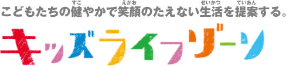
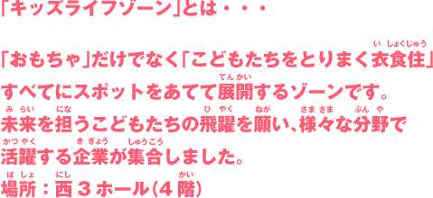

おもちゃで世界を笑顔に。東京おもちゃショー2014 INTERNATIONAL TOKYO TOY SHOW
文字の大きさ
小
│
中
│
大
トップ
＞
一般公開
＞ キッズライフゾーン


→ホールマップはこちら
K-1
NPO法人 日本ジュニアゴルファー育成協議会
その他の商品・サービス
K-2
（株）小学館集英社プロダクション
・小学館の幼児教室ドラキッズ・小学館の英語教室イーコラボ体験
・小学館の通信添削学習ドラゼミ、クイズラリー
K-3
（公財）日本相撲協会
こども向けの相撲教室
K-4
（株）保険見直し本舗
その他の商品・サービス
K-5
（株）ジェイアール東日本企画
JR東日本の新幹線をモチーフにした新しいキャラクターの紹介や、電車の運転体験ができるシミュレーター付きジオラマ展示。
K-6
TOKYO FM
ラジオ番組のパーソナリティになれるキッズDJ体験
K-7
ファミリーアップス
・タブレットで楽しむ、10社以上の有名企業のおしごと体験
・親子で参加できる「おしごと体験」クイズ大会
K-8
おもちゃのまちバンダイミュージアム
その他の商品・サービス
K-9
トヨタ自動車（株）
親子で楽しめる小型コンセプトカーの展示
K-10
（一社）盲導犬総合支援センター
盲導犬チャリティグッズ販売、盲導犬育成募金活動、盲導犬クイズやミニゲーム実施
K-11
（公財）日本宇宙少年団
その他の商品・サービス
K-12
清水建設（株）
鳴子づくりや木のお魚釣り、カンナ削り体験など
K-13
（一社）日本時計協会
めざまし時計組立体験教室
K-14
（公財）東京動物園協会
その他の商品・サービス
K-15
日産自動車（株）
その他の商品・サービス
K-16
（株）ロッテ
その他の商品・サービス
K-17
ハウス食品（株）
「とんがりコーン」ディップ試食とサンプリング
K-18
仙台大学
「足こぎ車いす 体験コーナー」タイムトライアル挑戦
K-19
台東区・墨田区・江東区
雑貨・生活/その他の商品・サービス
K-20
那須ハイランドパーク
その他の商品・サービス
2014.6.14
一般公開の様子ページ
がオープンしました。
2014.6.12
商談見本市の様子ページ
がオープンしました。
2014.5.30
ステージショーページ
を更新しました。
2014.5.21
出展社のイベントページ
・
キッズパークページ
・
受注キャンペーンについてページ
がオープンしました。
2014.5.16
来場者登録証ダウンロードページ
がオープンしました。
2014.4.25
ステージショーページ
がオープンしました。
2014.4.4
東京おもちゃショー2014
英語ページ
がオープンしました。
2014.3.24
東京おもちゃショー2014公式ホームページ、グランドオープンしました！